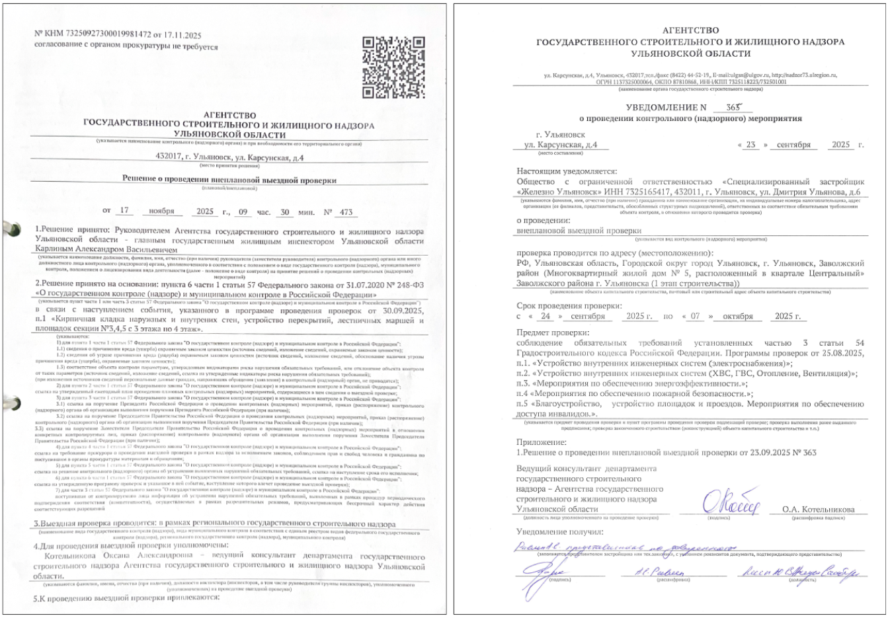
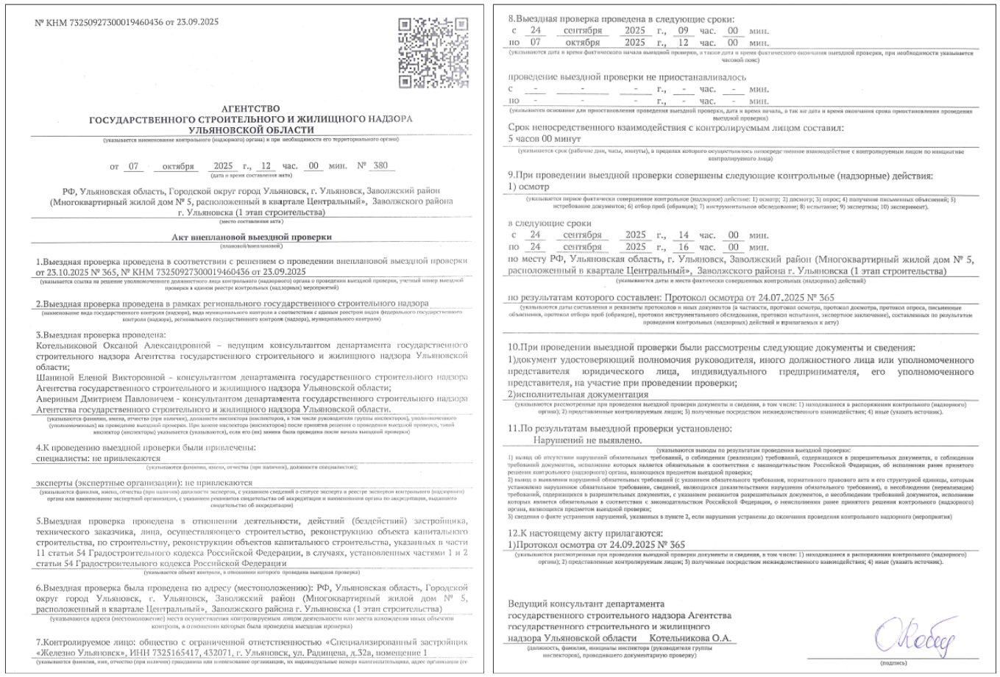
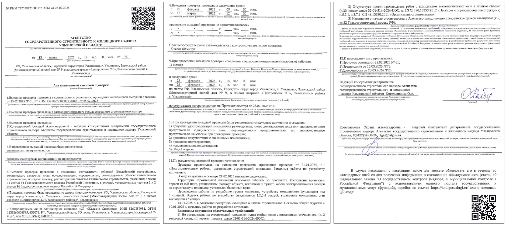
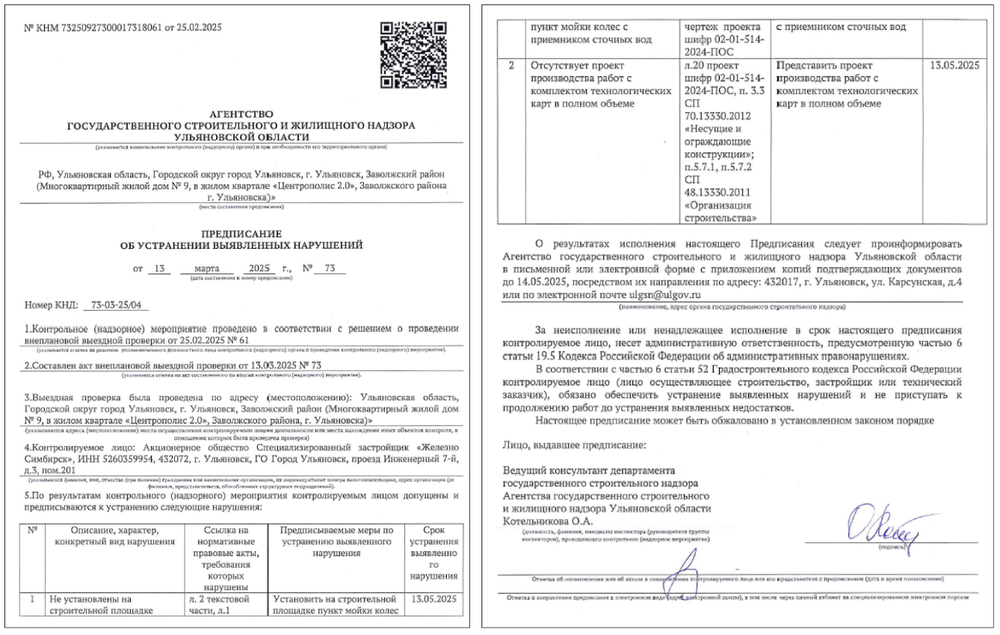
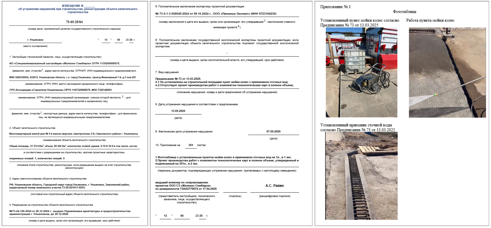

Прохождение этапов программы проверок
К извещению инспектора ГСН о сроках завершения работ на объекте нужно подходить ответственно: от этого зависит имидж, качество и скорость строительства.
Извещение о сроках завершения работ имеет форму, закрепленную нормативно-правовым актом регионального органа ГСН. Направлять его необходимо при полной уверенности и готовности показать инспектору выполненные работы согласно пункту программы проведения проверок.
Извещение подается в ГСН нарочно в бумажном виде. Ответственный инспектор, закрепленный за объектом, на основании извещения составляет внутренние документы:
- Решение о проведении контрольного (надзорного) мероприятия (КНМ). Внутренний документ ГСН: указываются сроки, основания, предмет проверки, перечень документов для проверки соответствия работ проектной документации, дата, номер и объект.
Инспектор проверяет наличие действующего РНС и соответствие работ проектной документации. - Уведомление о проведении КНМ. Вручается представителю застройщика: подтверждает уведомление о дате, месте и предмете проверки (пункт программы). Указываются объект, адрес, даты и предмет.

Срок проверки — не более 10 рабочих дней: инспектор может посещать площадку для поиска нарушений. Обычно обходится 1–2 визитами (1–3 часа, в зависимости от объема работ по пункту программы), согласованными по звонку.
При визите инспектора на площадке обязательно присутствуют представители застройщика, техзаказчика и подрядчика для пояснений.
Инспектор визуально оценивает работы на соответствие проектной документации (стадии П; рабочая документация стадии Р не противоречит ей). Затем проверяет исполнительную документацию (акты, схемы, протоколы испытаний), подтверждающую соответствие работ проекту и их качество.
Если в ходе проверки не обнаружены замечания и работы выполнены согласно проекту, инспектор ГСН, в последний день проверки, составляет Акт проверки с указанием отсутствия нарушений градостроительного законодательства.

Если выявлены несоответствия (визуально или документально), инспектор фиксирует их в акте с нарушениями и выдает предписание об устранении.

Предписание об устранении нарушений — документ с перечнем нарушений, сроками устранения («разумный срок» по законодательству).

Замечания формулируют четко, с ссылкой на НПА (например, «несоответствие армирования» — с отсылкой к листу/разделу КР проектной документации).
За нарушения — санкции по КоАП РФ: ст. 9.5 (несвоевременное извещение), ст. 9.4 (несоответствие проекту). Штраф на юрлицо/должностное: предупреждение (первое) или деньги (по повторности).
После предписания инспектор составляет протокол об АО (уведомив заказным письмом нарушителя; присутствует представитель по доверенности). Застройщика уведомляют о дате рассмотрения протокола. До этого можно направить документы об устранении (обследования, фото, пояснения).
После постановления — обжаловать в суде или согласиться. Если замечания необоснованны — досудебное обжалование через Госуслуги (мотивированное заявление о несогласии). Результат: отмена/подтверждение. При отказе — суд.
Устранение замечаний: до срока предписания принять меры по требованиям инспектора.
При уверенности в устранении готовят извещение об устранении нарушений.

Процедура как обычная проверка, но предмет — исполнение предписания (например, «нет мойки колес» — она должна стоять; нет ППР — предоставить). Новые замечания инспектор выдать не вправе.
Проверка заканчивается актом без нарушений или новым предписанием (по неисполнению; заводится АО).
Предписание можно продлить один раз (при обосновании трудностей исполнения).